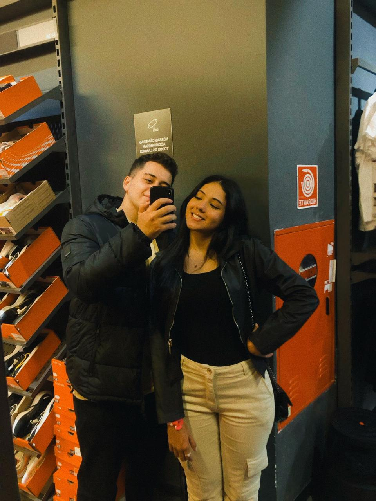

Sei
que
o
nosso
amor
não
cabe
em
um
IP,
mas
prometo
confessá-lo
para
sempre
Não
te
ofereço
nada
menos
que
tudo,
e
te
peço
apenas
um
amor
eterno
Que
o
meu
afeto
nunca
te
baste,
eu
te
amo...

Seu navegador não suporta o elemento de áudio.
Nosso tempo juntos!!
Anos: 0
Meses: 00
Dias: 000
Horas: 00:00:00
Validade: ∞